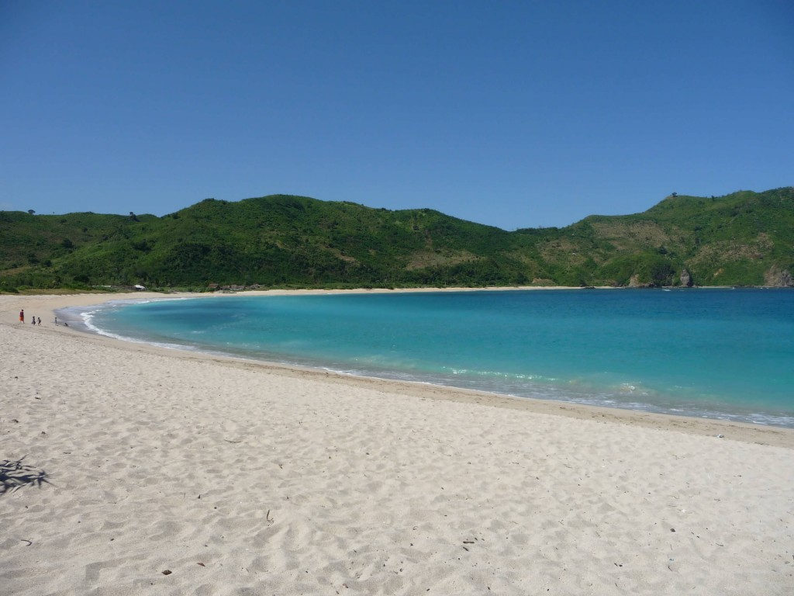
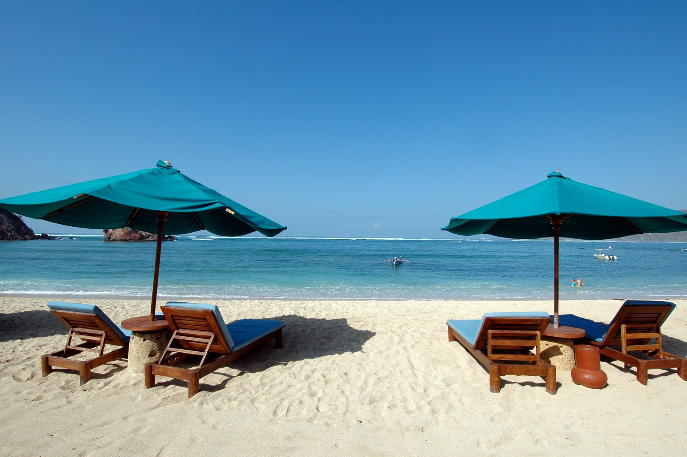
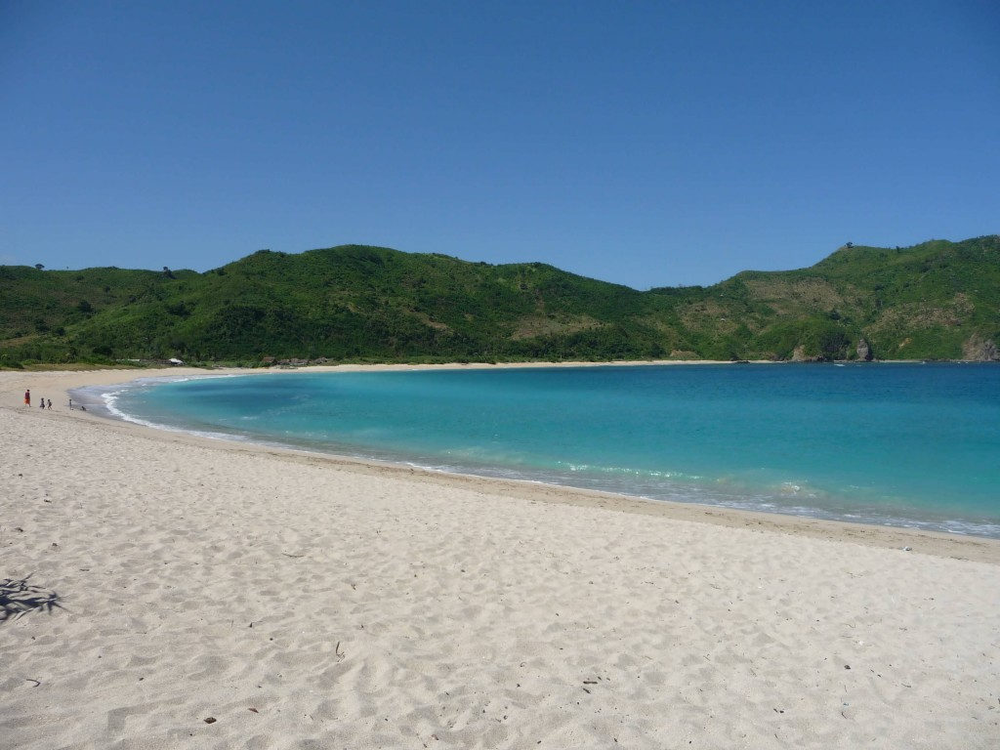
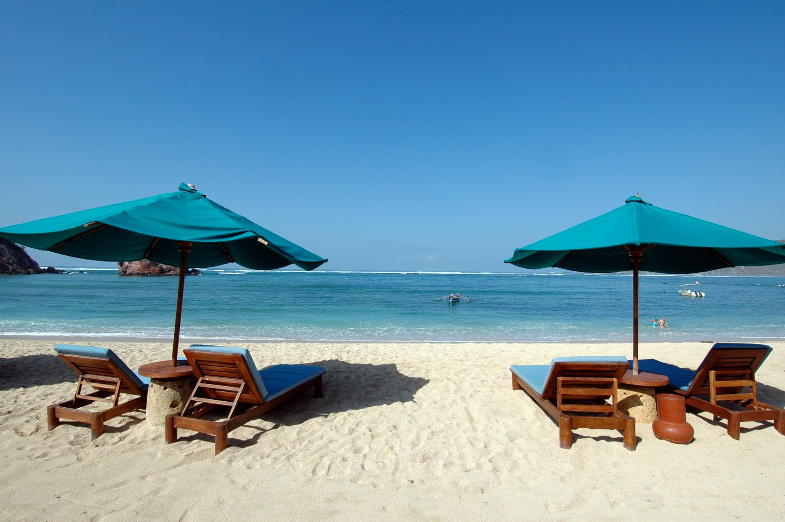

Pantai Kuta
Pantai pasir putih ini sangat tekenal dan menjadi andalan pulau Bali, sebagai tempat wisata pantai, sejak tahun 70-an. Tempat wisata Kuta Bali khususnya area pantai, sampai saat ini masih menjadi daya tarik utama wisatawan liburan ke pulau Bali. Terutama wisatawan muda yang berasal dari Australia dan wisatawan Indonesia.
Sejarah Sebelum Terkenal
Sebelum terkenal menjadi tempat wisata pantai dulunya tempat ini adalah perkampungan nelayan tradisional. Namun kini telah berubah menjadi tempat pertemuan wisatawan dari berbagai negara. Selain itu, pantai Kuta dulunya adalah pelabuhan dagang dan banyak pedagang dari luar Bali melakukan transaksi dagang di sini.
Pada abad ke 19, seorang pedagang yang berasal dari Denmark bernama Mads Lange, mendirikan tempat perdagangan di pantai ini. Karena kepandaiannya dalam bertransaksi dan negosiasi dagang, Mads Lange terkenal di kalangan raja-raja Bali.
Habitat Dari Penyu Hijau
Dulunya pantai ini adalah habitat dari penyu hijau dan banyak orang yang tidak tahu akan hal ini. Penyu hijau keberadaannya hampir punah dan menjadi salah satu hewan yang dilindungi pemeritah Indonesia. Penangkaran penyu hijau di pulau Bali sekarang telah dipindahkan ke pantai Tanjung Benoa Bali. Jika anda ingin melihat penyu hijau anda dapat berkunjung ke pulau penyu di Tanjung Benoa menggunakan glass bottom boat, sambil memberikan makan ikan dalam perjalanan menuju pulau penyu di Tanjung Benoa.
 


